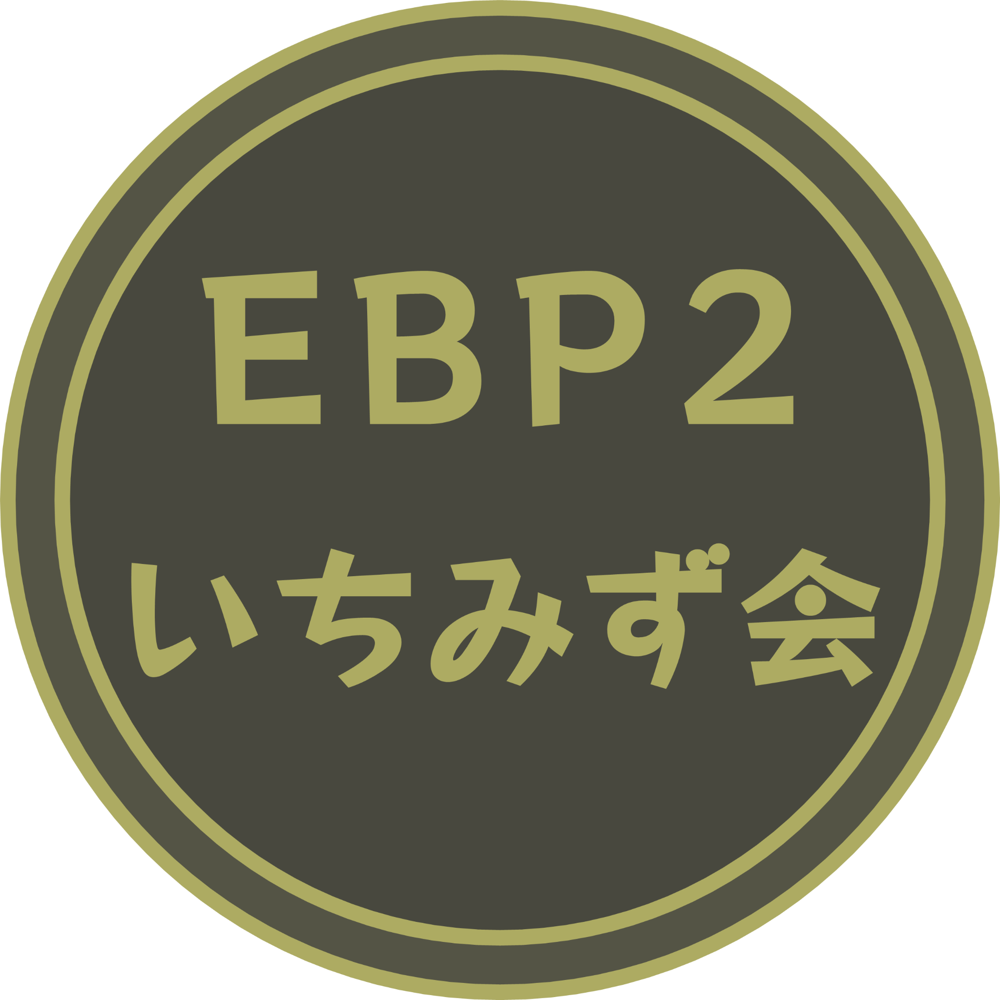
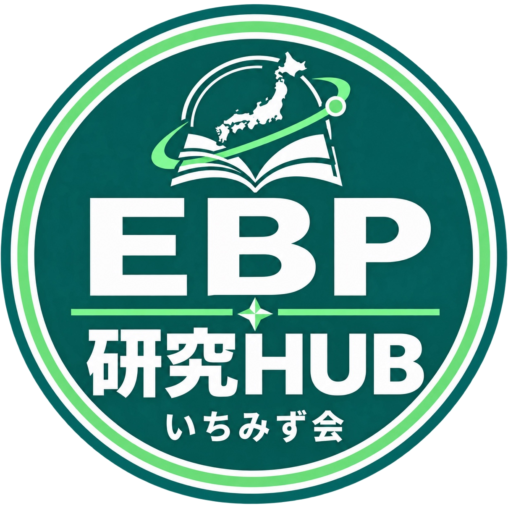
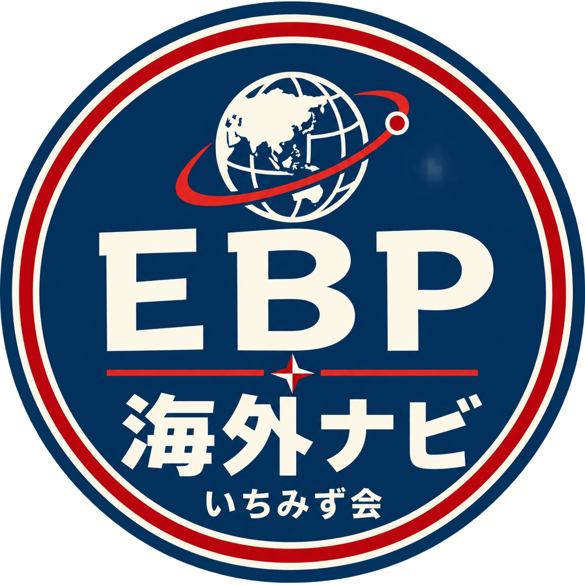
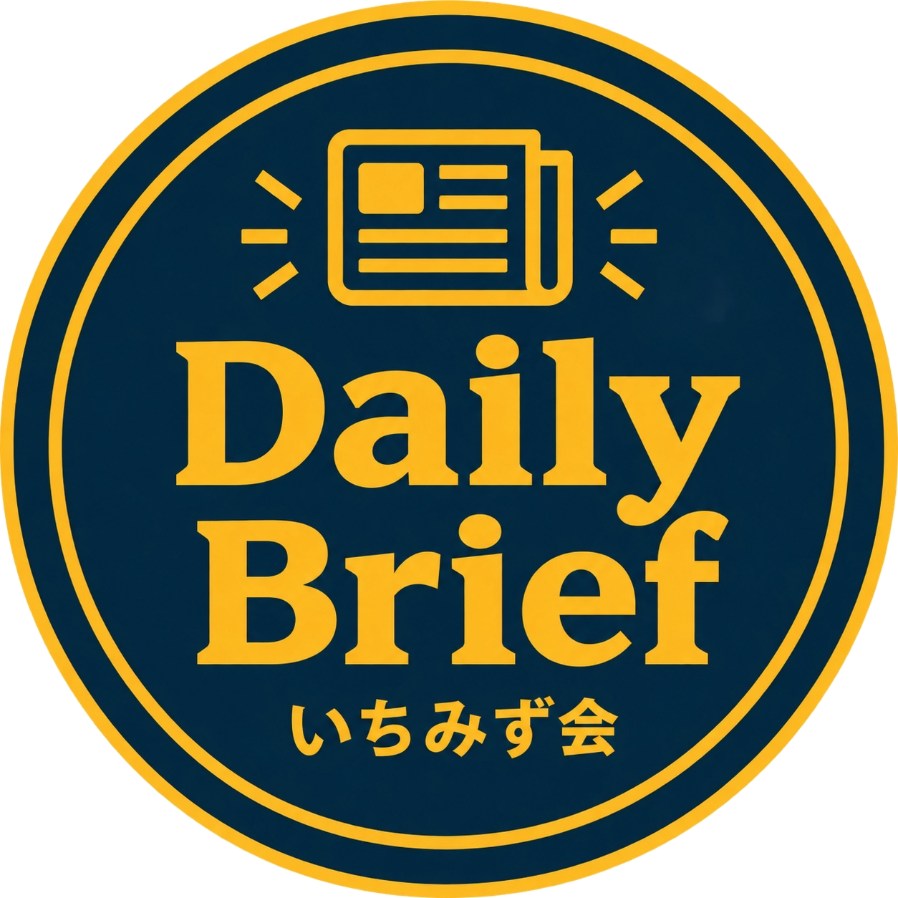
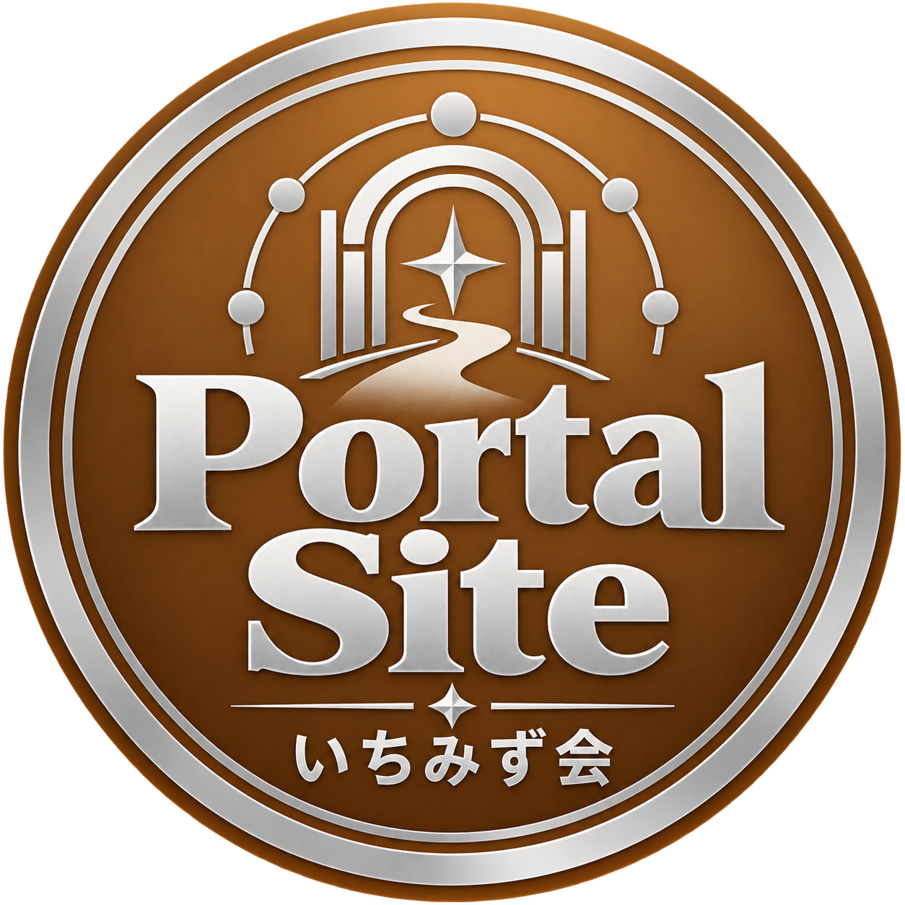
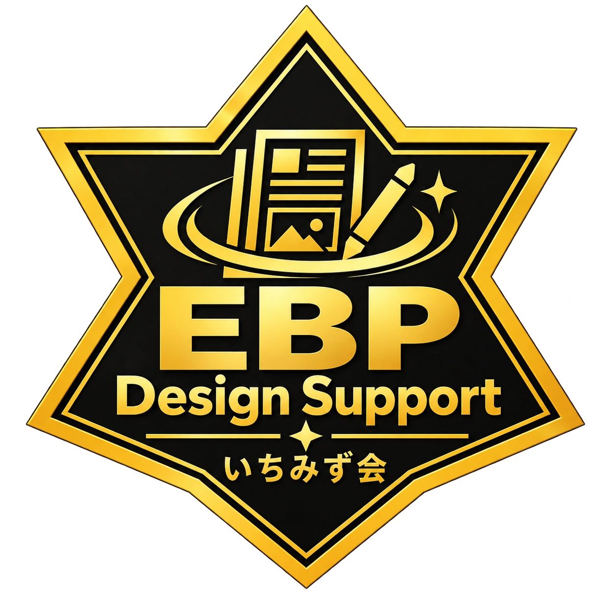
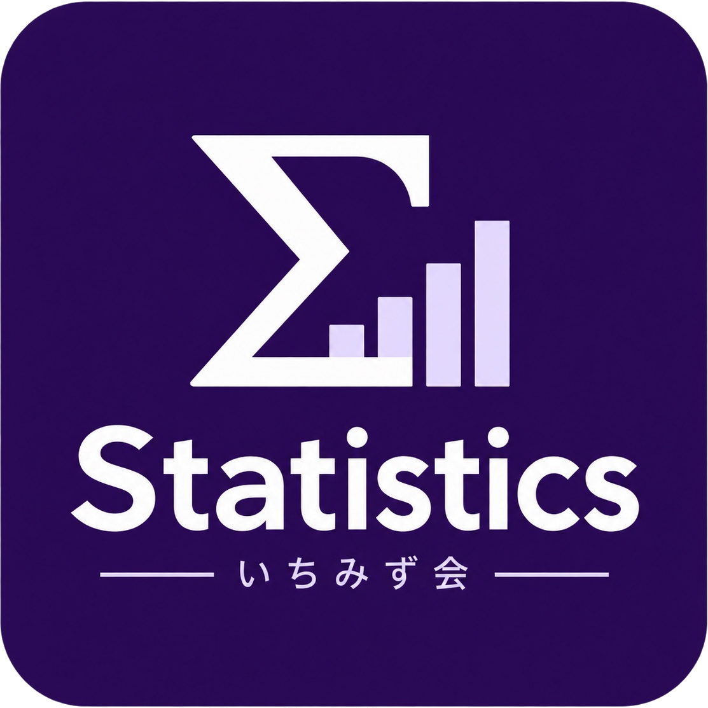

いちみず会HP勉強会の案内・活動報告を掲載。
研究HUB国内の警察EBP・犯罪予防研究を整理。
海外EBPナビ海外の実務ガイド・研究・事例を案内。
Daily Brief国内外の重要情報を実務家向けに要約。
いちみず会ポータル関連サイトをひとつに束ねる案内図。
EBP Design Support実務上の課題に対する施策をAIとともに考案・検討するための
統計演習EBPに必要な統計と実務問題を学ぶ。